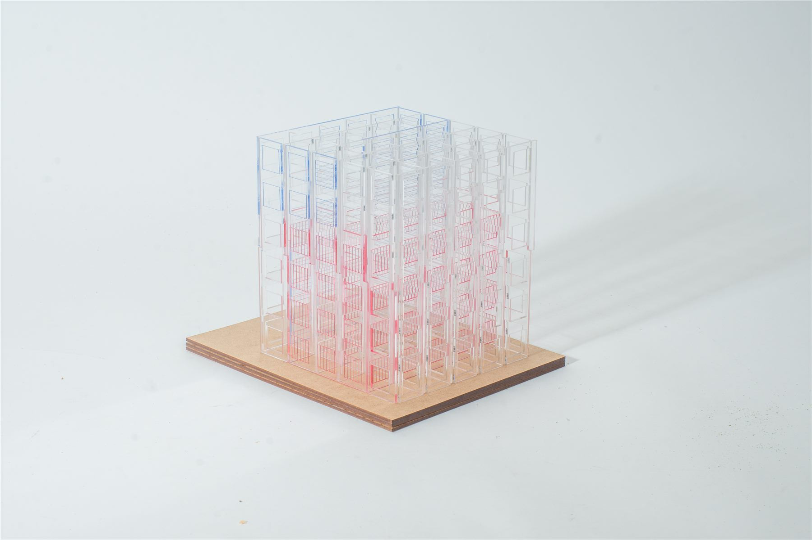
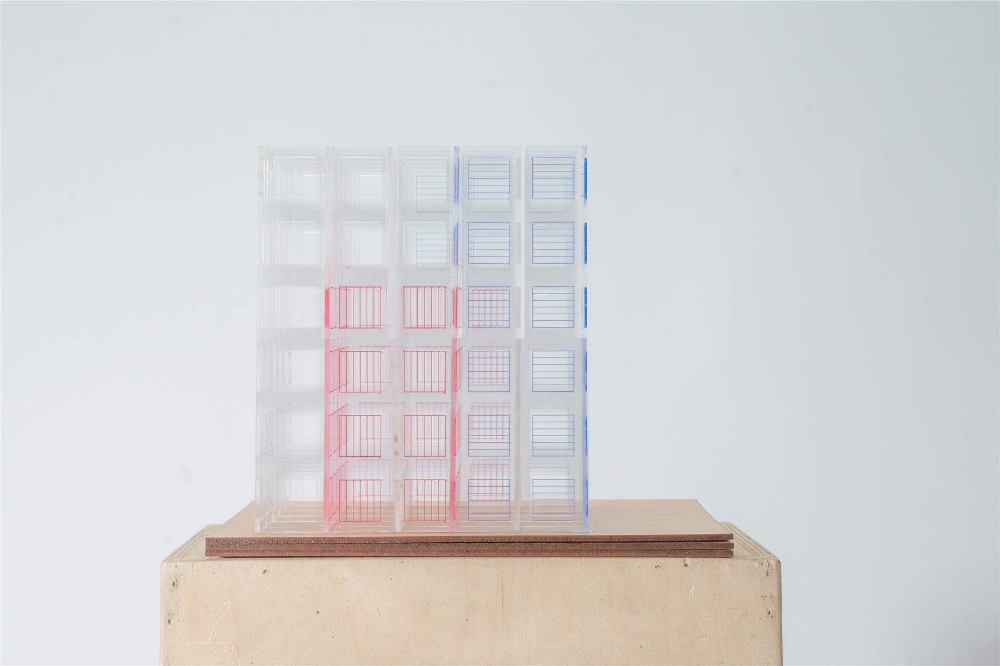
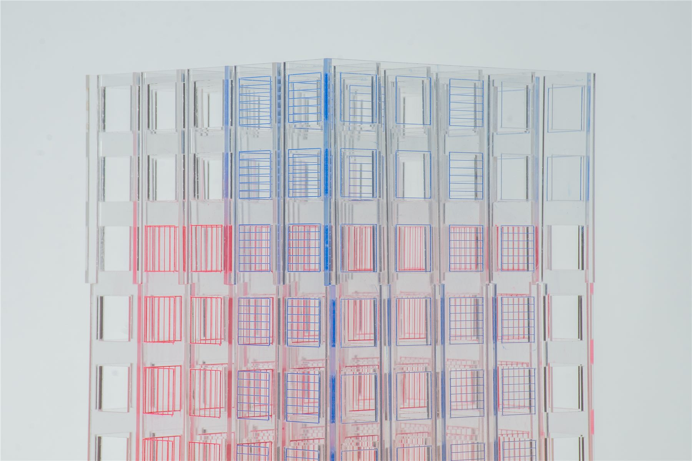
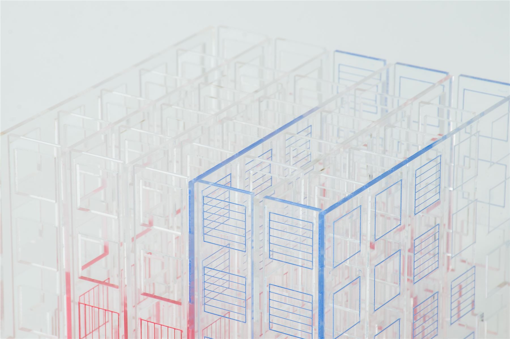
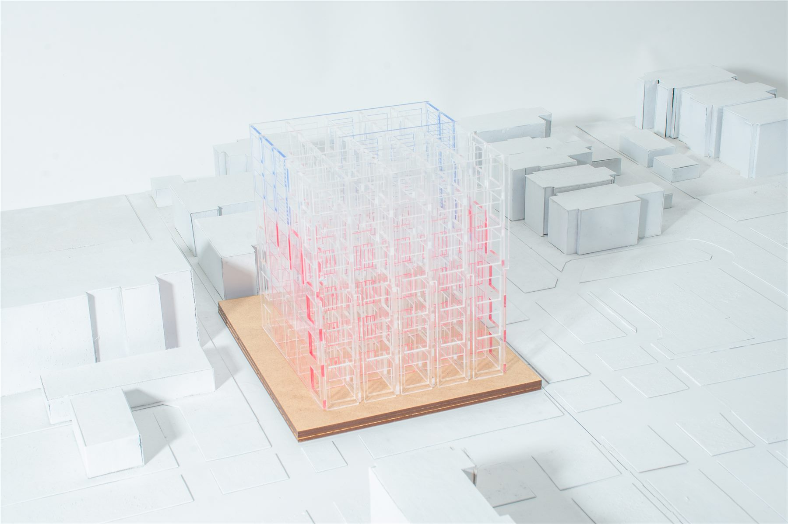

Project Three
Rethinking AI Data Centers
Speculative reimagining of data centers as local community hubs that expand and contract based on a grid of "nodes," offering a variety of types of interaction between human and AI.

Description
Project Overview
Speculative reimagining of data centers as local community hubs that expand and contract based on a grid of "nodes," offering a variety of types of interaction between human and AI.
Full Gallery
Images




